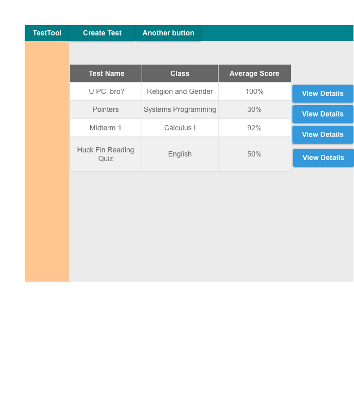

This scenario illustrates when a teacher views his or her tests that have automatically been graded

Figure 1: Teacher View of Automatically Graded Tests
The teacher clicks the title of the "Test Name column" to sort the test by name. Test Tool displays an up arrow on that column header to indicate that it is sorted in ascending order.
The teacher can click on that column header again to display in descending order. Test Tool will replace the up arrow to a down arrow to indicate the the sorting has changed from ascending order to descending. The teacher may click the header again to revert it to its original state, not sorted. The teacher may only sort by one column at a time, so if the teacher sorts by name then clicks the header of the grade column. TestTool will sort the tests by grade and no longer sort by name. Test tool wil display arrows to accurately represent this.
The Teacher clicks "View Details" in the row entry for the test named "U PC, bro", the the following view appears.
Figure 2: Teacher View of Student Submissions of a Given Test
The teacher sees the grade earned for each of his or her student for the administration of "U PC, bro" on May 14, 2014. The teacher may sort this table the same way the above table is sorted. The teacher clicks "View Details" to next to Sam, so see Sam's response for each question.